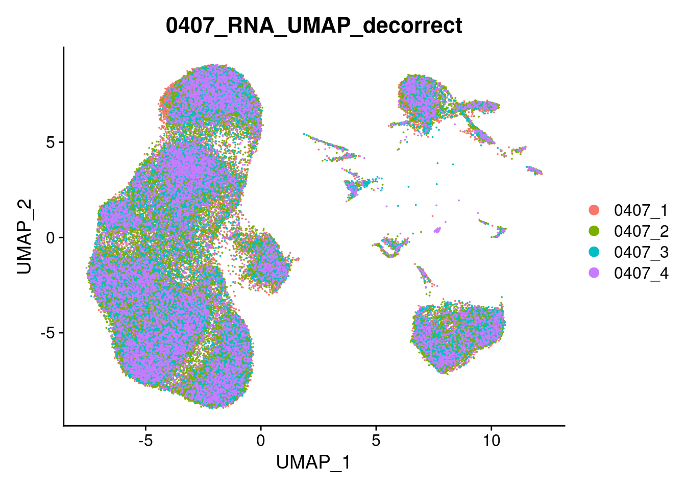

Last updated: 2022-08-04
Checks: 6 1
Knit directory: Cite_seq-analysis/
This reproducible R Markdown analysis was created with workflowr (version 1.7.0). The Checks tab describes the reproducibility checks that were applied when the results were created. The Past versions tab lists the development history.
Great! Since the R Markdown file has been committed to the Git repository, you know the exact version of the code that produced these results.
Great job! The global environment was empty. Objects defined in the global environment can affect the analysis in your R Markdown file in unknown ways. For reproduciblity it’s best to always run the code in an empty environment.
The command set.seed(20220802) was run prior to running
the code in the R Markdown file. Setting a seed ensures that any results
that rely on randomness, e.g. subsampling or permutations, are
reproducible.
Great job! Recording the operating system, R version, and package versions is critical for reproducibility.
Nice! There were no cached chunks for this analysis, so you can be confident that you successfully produced the results during this run.
Using absolute paths to the files within your workflowr project makes it difficult for you and others to run your code on a different machine. Change the absolute path(s) below to the suggested relative path(s) to make your code more reproducible.
| absolute | relative |
|---|---|
| /home/jiangxinyu/R/R_project/Cite_seq-analysis/analysis/images/0407_RNA_cluster_Dimplot.png | analysis/images/0407_RNA_cluster_Dimplot.png |
Great! You are using Git for version control. Tracking code development and connecting the code version to the results is critical for reproducibility.
The results in this page were generated with repository version fad00c9. See the Past versions tab to see a history of the changes made to the R Markdown and HTML files.
Note that you need to be careful to ensure that all relevant files for
the analysis have been committed to Git prior to generating the results
(you can use wflow_publish or
wflow_git_commit). workflowr only checks the R Markdown
file, but you know if there are other scripts or data files that it
depends on. Below is the status of the Git repository when the results
were generated:
Ignored files:
Ignored: .Rproj.user/
Note that any generated files, e.g. HTML, png, CSS, etc., are not included in this status report because it is ok for generated content to have uncommitted changes.
These are the previous versions of the repository in which changes were
made to the R Markdown
(analysis/merge_PBMC_0407_0410_DeBatch_annotation.Rmd) and
HTML (docs/merge_PBMC_0407_0410_DeBatch_annotation.html)
files. If you’ve configured a remote Git repository (see
?wflow_git_remote), click on the hyperlinks in the table
below to view the files as they were in that past version.
| File | Version | Author | Date | Message |
|---|---|---|---|---|
| html | fad00c9 | JiangXinYu0313 | 2022-08-04 | Build site. |
| Rmd | 2cc7682 | JiangXinYu0313 | 2022-08-04 | Add my first analysis |
| html | acb59e0 | JiangXinYu0313 | 2022-08-04 | Build site. |
| Rmd | 3eaf90c | JiangXinYu0313 | 2022-08-04 | Add my first analysis |
| html | 70cd7f9 | JiangXinYu0313 | 2022-08-04 | Build site. |
| Rmd | 367ef0a | JiangXinYu0313 | 2022-08-04 | Add my first analysis |
| html | b6faa00 | JiangXinYu0313 | 2022-08-04 | Build site. |
| Rmd | ef9bcb6 | JiangXinYu0313 | 2022-08-04 | Add my first analysis |
| html | 5c90320 | JiangXinYu0313 | 2022-08-04 | Build site. |
| Rmd | 0242a35 | JiangXinYu0313 | 2022-08-04 | Add my first analysis |
| html | 39a2756 | JiangXinYu0313 | 2022-08-04 | Build site. |
| Rmd | 75d44fe | JiangXinYu0313 | 2022-08-04 | Add my first analysis |
| html | 65aad86 | JiangXinYu0313 | 2022-08-04 | Build site. |
| Rmd | b44b7ea | JiangXinYu0313 | 2022-08-04 | Add my first analysis |
| html | cd193ba | JiangXinYu0313 | 2022-08-04 | Build site. |
| Rmd | 2587ad6 | JiangXinYu0313 | 2022-08-04 | Add my first analysis |
| html | c41593f | JiangXinYu0313 | 2022-08-04 | Build site. |
| Rmd | 8066789 | JiangXinYu0313 | 2022-08-04 | Add my first analysis |
| html | 9a53f77 | JiangXinYu0313 | 2022-08-04 | Build site. |
| Rmd | 14246f7 | JiangXinYu0313 | 2022-08-04 | Add my first analysis |
| html | 8a0510d | JiangXinYu0313 | 2022-08-04 | Build site. |
| Rmd | eef1979 | JiangXinYu0313 | 2022-08-04 | Add my first analysis |
| html | 2766312 | JiangXinYu0313 | 2022-08-04 | Build site. |
| Rmd | 630cb93 | JiangXinYu0313 | 2022-08-04 | Add my first analysis |
| html | 28b7af5 | JiangXinYu0313 | 2022-08-04 | Build site. |
| Rmd | ca495ea | JiangXinYu0313 | 2022-08-04 | Add my first analysis |
| html | d1dd4c0 | JiangXinYu0313 | 2022-08-04 | Build site. |
| Rmd | b93f550 | JiangXinYu0313 | 2022-08-04 | Add my first analysis |
| html | 61c02b4 | JiangXinYu0313 | 2022-08-04 | Build site. |
| Rmd | 015d0d5 | JiangXinYu0313 | 2022-08-04 | Add my first analysis |
library(Seurat)
library(SeuratObject)
library(future)
library(ggplot2)
library(tidyverse)
library(harmony)Singlet_total_PBMC1<- readRDS("/database/jiangxinyu/Result/Total_PBMC1_QC_outs/Singlet_Coassay_total_PBMC1.rds")
Singlet_total_PBMC2<- readRDS("/database/jiangxinyu/Result/Total_PBMC2_QC_outs/Singlet_Coassay_total_PBMC2.rds")
Singlet_0407_1_add1<- readRDS("/database/jiangxinyu/Result/0407_1_add_L002_QC_outs/Singlet_Coassay_0407_1_add_L002.rds")
Singlet_0407_2_add1<- readRDS("/database/jiangxinyu/Result/0407_2_add_L002_QC_outs/Singlet_Coassay_0407_2_add_L002.rds")
##要清除批次cluster 0407-3 0407-4 0410-A1
Singlet_0407_3_add1<- readRDS("/database/jiangxinyu/Result/0407_3_add1_QC_outs/Singlet_Coassay_0407_3_add1.rds")
Singlet_0407_4_add1<- readRDS("/database/jiangxinyu/Result/0407_4_add1_QC_outs/Singlet_Coassay_0407_4_add1.rds")
Singlet_0410_A1_add1<- readRDS("/database/jiangxinyu/Result/0410_A1_add1_QC_outs/Singlet_Coassay_0410_A1_add1.rds")
Singlet_0410_A3_add1<- readRDS("/database/jiangxinyu/Result/0410_A3_add_L002_QC_outs/Singlet_Coassay_0410_A3_add_L002.rds")
Singlet_0410_A4_add1<- readRDS("/database/jiangxinyu/Result/0410_A4_add_L002_QC_outs/Singlet_Coassay_0410_A4_add_L002.rds")
Singlet_0410_B1_add2<- readRDS("/database/jiangxinyu/Result/0410_B1_add2_QC_outs/Singlet_Coassay_0410_B1_add2.rds")
Singlet_0410_B2_add2<- readRDS("/database/jiangxinyu/Result/0410_B2_add2_QC_outs/Singlet_Coassay_0410_B2_add2.rds")
Singlet_0410_B3_add2<- readRDS("/database/jiangxinyu/Result/0410_B3_add2_QC_outs/Singlet_Coassay_0410_B3_add2.rds")
Singlet_0410_B4_add2<- readRDS("/database/jiangxinyu/Result/0410_B4_add2_QC_outs/Singlet_Coassay_0410_B4_add2.rds")##PBMC
Singlet_total_PBMC <- merge(Singlet_total_PBMC1,Singlet_total_PBMC2,add.cell.ids = c("PBMC1","PBMC2"))
PBMC_pool_index <- substr(colnames(Singlet_total_PBMC),1,5)
Singlet_total_PBMC@meta.data[["PBMC_pool_index"]] <- PBMC_pool_index##RNA cluster
Singlet_total_PBMC@active.assay <- "RNA"
# Select the top 1000 most variable features
Singlet_total_PBMC <- FindVariableFeatures(Singlet_total_PBMC)
# Scaling RNA data, we only scale the variable features here for efficiency
Singlet_total_PBMC <- ScaleData(Singlet_total_PBMC, features = VariableFeatures(Singlet_total_PBMC))
# Run PCA
Singlet_total_PBMC <- RunPCA(Singlet_total_PBMC,features = VariableFeatures(Singlet_total_PBMC))
# We select the top 10 PCs for clustering and tSNE based on PCElbowPlot
Singlet_total_PBMC <- FindNeighbors(Singlet_total_PBMC, reduction = "pca", dims = 1:20)
Singlet_total_PBMC <- FindClusters(Singlet_total_PBMC, resolution = 0.2, verbose = FALSE)
Singlet_total_PBMC <- RunUMAP(Singlet_total_PBMC,dims = 1:20)Singlet_total_PBMC<- readRDS("/database/jiangxinyu/Result/merge_PBMC_0407_0410_outs/Singlet_total_PBMC.rds")
#pdf("/database/jiangxinyu/Result/Batch_outs/0410B_add2_Batch_Dimplot.pdf",width = 18,height = 12)
DimPlot(Singlet_total_PBMC,reduction = "umap",group.by = "PBMC_pool_index",raster=FALSE)
| Version | Author | Date |
|---|---|---|
| b6faa00 | JiangXinYu0313 | 2022-08-04 |
#dev.off()
DimPlot(Singlet_total_PBMC,reduction = "umap",label = T,raster=FALSE)
| Version | Author | Date |
|---|---|---|
| b6faa00 | JiangXinYu0313 | 2022-08-04 |
#table(Singlet_total_PBMC@meta.data[["PBMC_pool_index"]])##0407
Singlet_total_0407 <- merge(Singlet_0407_1_add1,c(Singlet_0407_2_add1,Singlet_0407_3_add1,Singlet_0407_4_add1),add.cell.ids = c("0407_1","0407_2","0407_3","0407_4"))
Pool_index_0407 <- substr(colnames(Singlet_total_0407),1,6)
Singlet_total_0407@meta.data[["Pool_index_0407"]] <- Pool_index_0407##WNN
DefaultAssay(Singlet_total_0407) <- 'RNA'
Singlet_total_0407 <- NormalizeData(Singlet_total_0407) %>% FindVariableFeatures() %>% ScaleData() %>% RunPCA()
DefaultAssay(Singlet_total_0407) <- 'ADT'
# we will use all ADT features for dimensional reduction
# we set a dimensional reduction name to avoid overwriting the
VariableFeatures(Singlet_total_0407) <- rownames(Singlet_total_0407[["ADT"]])
Singlet_total_0407 <- NormalizeData(Singlet_total_0407, normalization.method = 'CLR', margin = 2) %>%
ScaleData() %>% RunPCA(reduction.name = 'apca')
Singlet_total_0407 <- FindMultiModalNeighbors(
Singlet_total_0407, reduction.list = list("pca", "apca"),
dims.list = list(1:30, 1:18), modality.weight.name = "RNA.weight"
)
Singlet_total_0407 <- RunUMAP(Singlet_total_0407, nn.name = "weighted.nn", reduction.name = "wnn.umap", reduction.key = "wnnUMAP_")
Singlet_total_0407 <- FindClusters(Singlet_total_0407, graph.name = "wsnn", algorithm = 3, resolution = 0.2, verbose = FALSE)DimPlot(Singlet_total_0407,reduction = "wnn.umap",group.by = "Pool_index_0407",raster=FALSE)+ggtitle("0407_WNN_UMAP")
DimPlot(Singlet_total_0407,reduction = "wnn.umap",label = T,raster=FALSE)+ggtitle("0407_WNN_UMAP_cluster")##RNA cluster
Singlet_total_0407@active.assay <- "RNA"
# Select the top 1000 most variable features
Singlet_total_0407 <- FindVariableFeatures(Singlet_total_0407)
# Scaling RNA data, we only scale the variable features here for efficiency
Singlet_total_0407 <- ScaleData(Singlet_total_0407, features = VariableFeatures(Singlet_total_0407))
# Run PCA
Singlet_total_0407 <- RunPCA(Singlet_total_0407,features = VariableFeatures(Singlet_total_0407))
# We select the top 10 PCs for clustering and tSNE based on PCElbowPlot
Singlet_total_0407 <- FindNeighbors(Singlet_total_0407, reduction = "pca", dims = 1:20)
Singlet_total_0407 <- FindClusters(Singlet_total_0407, resolution = 0.2, verbose = FALSE)
Singlet_total_0407 <- RunUMAP(Singlet_total_0407,dims = 1:20)png("/home/jiangxinyu/R/R_project/Cite_seq-analysis/analysis/images/0407_RNA_cluster_Dimplot.png",width = 2400,height = 1800)
DimPlot(Singlet_total_0407,reduction = "umap",group.by = "Pool_index_0407",raster=FALSE)+ggtitle("0407_RNA_UMAP_cluster")
dev.off()
#DimPlot(Singlet_total_0407,reduction = "umap",label = T,raster=FALSE)+ggtitle("0407_RNA_UMAP_cluster")##去掉cluster1的细胞
Singlet_total_0407_decorrect<- Singlet_total_0407[,Singlet_total_0407@meta.data[["RNA_snn_res.0.2"]]!="2"]Singlet_total_0407_decorrect<- readRDS("/database/jiangxinyu/Result/merge_PBMC_0407_0410_outs/Singlet_total_0407_decorrect.rds")
DimPlot(Singlet_total_0407_decorrect,reduction = "umap",label = T,raster=FALSE)+ggtitle("RNA_UMAP_cluster_decorrect")
| Version | Author | Date |
|---|---|---|
| fad00c9 | JiangXinYu0313 | 2022-08-04 |
DimPlot(Singlet_total_0407_decorrect,reduction = "umap",group.by = "Pool_index_0407",raster=FALSE)+ggtitle("RNA_UMAP_decorrect")
| Version | Author | Date |
|---|---|---|
| fad00c9 | JiangXinYu0313 | 2022-08-04 |
table(Singlet_total_0407_decorrect@meta.data[["Pool_index_0407"]])
0407_1 0407_2 0407_3 0407_4
29066 44118 15147 11927 Singlet_total_0410A_decorrect<- readRDS("/database/jiangxinyu/Result/merge_PBMC_0407_0410_outs/Singlet_total_0410A_decorrect.rds")
DimPlot(Singlet_total_0410A_decorrect,reduction = "umap",label = T,raster=FALSE)+ggtitle("RNA_UMAP_cluster_decorrect")
DimPlot(Singlet_total_0410A_decorrect,reduction = "umap",group.by = "Pool_index_0410A",raster=FALSE)+ggtitle("RNA_UMAP_decorrect")
| Version | Author | Date |
|---|---|---|
| acb59e0 | JiangXinYu0313 | 2022-08-04 |
table(Singlet_total_0410A_decorrect@meta.data[["Pool_index_0410A"]])
0410_A1 0410_A3 0410_A4
20865 36983 37947 Singlet_total_0410B_decorrect<- readRDS("/database/jiangxinyu/Result/merge_PBMC_0407_0410_outs/Singlet_total_0410B_decorrect.rds")
DimPlot(Singlet_total_0410B_decorrect,reduction = "umap",label = T,raster=FALSE)+ggtitle("0410B_RNA_UMAP_cluster_decorrect")
| Version | Author | Date |
|---|---|---|
| fad00c9 | JiangXinYu0313 | 2022-08-04 |
DimPlot(Singlet_total_0410B_decorrect,reduction = "umap",group.by = "Pool_index_0410B",raster=FALSE)+ggtitle("0410B_RNA_UMAP_decorrect")
| Version | Author | Date |
|---|---|---|
| fad00c9 | JiangXinYu0313 | 2022-08-04 |
table(Singlet_total_0410B_decorrect@meta.data[["Pool_index_0410B"]])
0410_B1 0410_B2 0410_B3 0410_B4
33856 35314 24201 40229
sessionInfo()R version 4.2.0 (2022-04-22)
Platform: x86_64-pc-linux-gnu (64-bit)
Running under: Ubuntu 20.04.4 LTS
Matrix products: default
BLAS: /usr/lib/x86_64-linux-gnu/atlas/libblas.so.3.10.3
LAPACK: /usr/lib/x86_64-linux-gnu/atlas/liblapack.so.3.10.3
locale:
[1] LC_CTYPE=en_US.UTF-8 LC_NUMERIC=C
[3] LC_TIME=en_US.UTF-8 LC_COLLATE=en_US.UTF-8
[5] LC_MONETARY=en_US.UTF-8 LC_MESSAGES=en_US.UTF-8
[7] LC_PAPER=en_US.UTF-8 LC_NAME=C
[9] LC_ADDRESS=C LC_TELEPHONE=C
[11] LC_MEASUREMENT=en_US.UTF-8 LC_IDENTIFICATION=C
attached base packages:
[1] stats graphics grDevices utils datasets methods base
other attached packages:
[1] harmony_0.1.0 Rcpp_1.0.9 forcats_0.5.1 stringr_1.4.0
[5] dplyr_1.0.9 purrr_0.3.4 readr_2.1.2 tidyr_1.2.0
[9] tibble_3.1.8 tidyverse_1.3.2 ggplot2_3.3.6 future_1.27.0
[13] sp_1.5-0 SeuratObject_4.1.0 Seurat_4.1.1 workflowr_1.7.0
loaded via a namespace (and not attached):
[1] readxl_1.4.0 backports_1.4.1 plyr_1.8.7
[4] igraph_1.3.4 lazyeval_0.2.2 splines_4.2.0
[7] listenv_0.8.0 scattermore_0.8 digest_0.6.29
[10] htmltools_0.5.3 fansi_1.0.3 magrittr_2.0.3
[13] tensor_1.5 googlesheets4_1.0.0 cluster_2.1.3
[16] ROCR_1.0-11 tzdb_0.3.0 globals_0.15.1
[19] modelr_0.1.8 matrixStats_0.62.0 spatstat.sparse_2.1-1
[22] colorspace_2.0-3 rvest_1.0.2 ggrepel_0.9.1
[25] haven_2.5.0 xfun_0.31 crayon_1.5.1
[28] callr_3.7.1 jsonlite_1.8.0 progressr_0.10.1
[31] spatstat.data_2.2-0 survival_3.3-1 zoo_1.8-10
[34] glue_1.6.2 polyclip_1.10-0 gtable_0.3.0
[37] gargle_1.2.0 leiden_0.4.2 future.apply_1.9.0
[40] abind_1.4-5 scales_1.2.0 DBI_1.1.3
[43] spatstat.random_2.2-0 miniUI_0.1.1.1 viridisLite_0.4.0
[46] xtable_1.8-4 reticulate_1.25 spatstat.core_2.4-4
[49] htmlwidgets_1.5.4 httr_1.4.3 RColorBrewer_1.1-3
[52] ellipsis_0.3.2 ica_1.0-3 farver_2.1.1
[55] pkgconfig_2.0.3 sass_0.4.2 uwot_0.1.11
[58] dbplyr_2.2.1 deldir_1.0-6 utf8_1.2.2
[61] labeling_0.4.2 tidyselect_1.1.2 rlang_1.0.4
[64] reshape2_1.4.4 later_1.3.0 munsell_0.5.0
[67] cellranger_1.1.0 tools_4.2.0 cachem_1.0.6
[70] cli_3.3.0 generics_0.1.3 broom_1.0.0
[73] ggridges_0.5.3 evaluate_0.15 fastmap_1.1.0
[76] yaml_2.3.5 goftest_1.2-3 processx_3.7.0
[79] knitr_1.39 fs_1.5.2 fitdistrplus_1.1-8
[82] RANN_2.6.1 pbapply_1.5-0 nlme_3.1-158
[85] whisker_0.4 mime_0.12 xml2_1.3.3
[88] compiler_4.2.0 rstudioapi_0.13 plotly_4.10.0
[91] png_0.1-7 spatstat.utils_2.3-1 reprex_2.0.1
[94] bslib_0.4.0 stringi_1.7.8 highr_0.9
[97] ps_1.7.1 rgeos_0.5-9 lattice_0.20-45
[100] Matrix_1.4-1 vctrs_0.4.1 pillar_1.8.0
[103] lifecycle_1.0.1 spatstat.geom_2.4-0 lmtest_0.9-40
[106] jquerylib_0.1.4 RcppAnnoy_0.0.19 data.table_1.14.2
[109] cowplot_1.1.1 irlba_2.3.5 httpuv_1.6.5
[112] patchwork_1.1.1 R6_2.5.1 promises_1.2.0.1
[115] KernSmooth_2.23-20 gridExtra_2.3 parallelly_1.32.1
[118] codetools_0.2-18 MASS_7.3-58 assertthat_0.2.1
[121] rprojroot_2.0.3 withr_2.5.0 sctransform_0.3.3
[124] hms_1.1.1 mgcv_1.8-40 parallel_4.2.0
[127] grid_4.2.0 rpart_4.1.16 rmarkdown_2.14
[130] googledrive_2.0.0 Rtsne_0.16 git2r_0.30.1
[133] getPass_0.2-2 lubridate_1.8.0 shiny_1.7.2